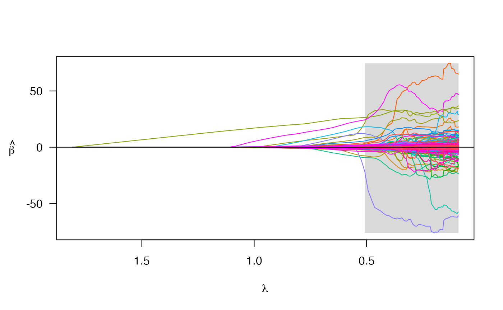
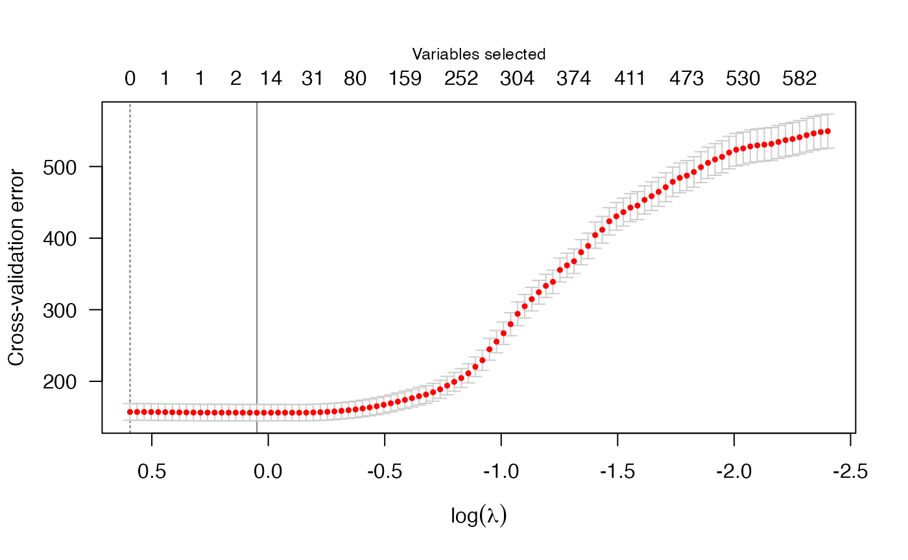

Processing PLINK files
A-plink-files.Rmd
library(penalizedLMM)The penncath_lite data is in the PLINK format (i.e.,
bed/bim/fam files), so I need to do some preprocessing first. The
process_plink function uses functions from the bigsnpr
package to do some quality control filtering steps. The result of
the process_plink function is an object with 1) a matrix of
genotypes and 2) a vector with the indices of any constant features
(e.g., SNPs with no variation across the sample).
Note: I am reading in the data using plink_example(), a
function that serves as a wrapper to base::system.file().
This is simply because the exact filepath is different for the user than
for the developer. If you save the PLINK files in a location other than
the directory where you installed penalizedLMM, just adjust
your choice of directory in the following function calls.
# preprocess PLINK files
penncath_lite <- process_plink(
data_dir = plink_example(parent = TRUE),
prefix = "penncath_lite",
gz = TRUE, # NB: PLINK data that ships with package comes gzipped
impute = TRUE, # mode imputation is default
outfile = "process_penncath")
#>
#> Logging to process_penncath.log
#> Preprocessing penncath_lite data:
#> Creating penncath_lite .rds
#>
#> Unzipping .gz files - this could take a second
#> There are 124 constant features in the data
#> There are a total of 3514 SNPs with missing values
#> Of these, 13 are missing in at least 50% of the samples
#> Imputing the missing values using mode method
#>
#> Done with imputation. Processed files now saved as .rds object.
# read in the data to global environment
pen <- get_data(path = paste0(plink_example(parent = TRUE), "/penncath_lite"))
str(pen) # Three objects here
#> List of 3
#> $ X : num [1:1401, 1:4367] 0 0 0 0 0 0 0 0 0 0 ...
#> ..- attr(*, "dimnames")=List of 2
#> .. ..$ : chr [1:1401] "1" "2" "3" "4" ...
#> .. ..$ : chr [1:4367] "rs3107153" "rs2455124" "rs10915476" "rs4592237" ...
#> $ fam:'data.frame': 1401 obs. of 6 variables:
#> ..$ family.ID : int [1:1401] 10002 10004 10005 10007 10008 10009 10010 10011 10012 10013 ...
#> ..$ sample.ID : int [1:1401] 1 1 1 1 1 1 1 1 1 1 ...
#> ..$ paternal.ID: int [1:1401] 0 0 0 0 0 0 0 0 0 0 ...
#> ..$ maternal.ID: int [1:1401] 0 0 0 0 0 0 0 0 0 0 ...
#> ..$ sex : int [1:1401] 1 2 1 1 1 1 1 2 1 2 ...
#> ..$ affection : int [1:1401] 1 1 2 1 2 2 2 1 2 -9 ...
#> $ map:'data.frame': 4367 obs. of 6 variables:
#> ..$ chromosome : int [1:4367] 1 1 1 1 1 1 1 1 1 1 ...
#> ..$ marker.ID : chr [1:4367] "rs3107153" "rs2455124" "rs10915476" "rs4592237" ...
#> ..$ genetic.dist: int [1:4367] 0 0 0 0 0 0 0 0 0 0 ...
#> ..$ physical.pos: int [1:4367] 2056735 3188505 4275291 4280630 4286036 4302161 4364564 4388885 4606471 4643688 ...
#> ..$ allele1 : chr [1:4367] "C" "T" "T" "G" ...
#> ..$ allele2 : chr [1:4367] "T" "C" "C" "A" ...In addition to the genotype data, I want to analyze a continuous phenotype stored in an external data file. I will load that here:
# NB: the 'quiet' option in process_plink() will silence the printed messages
pen_cl <- read.csv(plink_example(path = 'penncath_clinical.csv'))
# for the sake of illustration, I use a simple mean imputation for the outcome
pen_cl$hdl_impute <- ifelse(is.na(pen_cl$hdl),
mean(pen_cl$hdl, na.rm = T),
pen_cl$hdl)Now that we have the data processed, we can fit a model.
pen_fit <- plmm(X = pen$X,
y = pen_cl$hdl_impute)
#> Warning in plmm(X = pen$X, y = pen_cl$hdl_impute): The number of observations is large, and k is not specified.
#>
#> This can dramatically increase computational time -- the SVD calculation is expensive.
#>
#> If the observations are unrelated, please set diag_K = TRUE. SVD is not needed in this case.
#>
#> Otherwise, consider using choose_k() first to get an approximation for your relatedness matrix.
# to see a progress bar and progress messages, set trace = TRUE
names(pen_fit)
#> [1] "beta_vals" "lambda" "eta"
#> [4] "s" "U" "rot_y"
#> [7] "linear.predictors" "penalty" "gamma"
#> [10] "alpha" "convex.min" "loss"
#> [13] "penalty.factor" "ns_idx" "p"
#> [16] "n" "iter" "converged"We can summarize this fit at the 25th \(\lambda\) value:
summary(pen_fit, lambda = pen_fit$lambda[25])
#> MCP-penalized regression model with n=, p=4368 at lambda=0.8758
#> -------------------------------------------------
#> The model converged
#> -------------------------------------------------
#> # of non-zero coefficients: 25
#> -------------------------------------------------And we can plot the coefficient paths; note that in these graphs,
regions shaded in grey corresponds to values of \(\lambda\) for which the model fit is
nonconvex. See ncvreg::plot.ncvreg() for details.
plot(pen_fit)
We can implement cross-validation for this model using the code below:
pen_cv <- cv.plmm(X = pen$X,
y = pen_cl$hdl_impute)
# to see progress bar, run the above with the trace = TRUE argument; this will
# show a progress bar for each fold.
print(summary(pen_cv, lambda = "min"))
#> MCP-penalized model with n=and p=
#> At minimum cross-validation error (lambda=0.9027):
#> -------------------------------------------------
#> Nonzero coefficients: 24
#> Cross-validation error (deviance): 155.39
#> Scale estimate (sigma): 12.466
plot(pen_cv)
More to come…